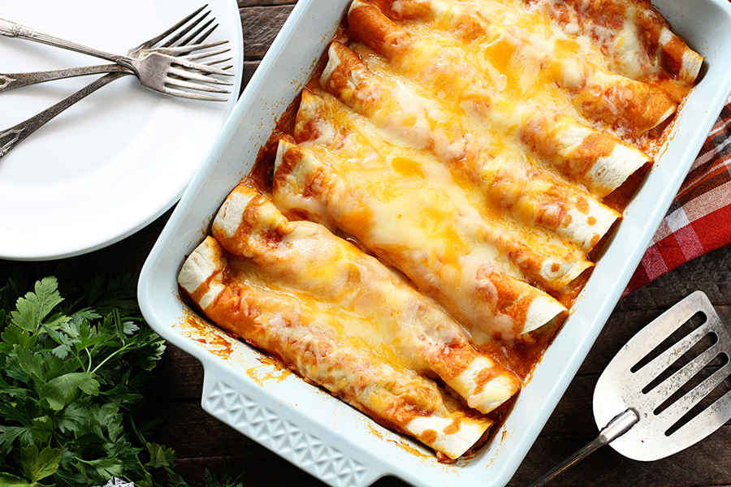

Enchiladas

For the Love of Cheese
Versatile and nutritious, enchiladas are easily customizable to suit personal preferences. With such a wide variety of meats, cheeses, and toppings, they are a great choice for anyone seeking to get a taste of a traditional Mexican dish that has a long and rich history.
Ingredients
- 2 pounds lean ground beef
- 1 large chopped onion
- 1/8 teaspoon garlic salt
- 12 (8 inch) flour tortillas
- 2 teaspoons vegetable oil
- 8 ounces shredded Colby cheese
- 2 (19 ounce) cans enchilada sauce
Directions
- Preheat oven to 350 degrees F (175 degrees C).
- In a heavy saucepan or skillet, brown the ground beef and onions. Season the ground beef mixture with garlic salt and set aside.
- In a skillet, fry the tortillas in vegetable oil. Spoon some meat mixture and cheese into the center of each tortilla, roll them up and arrange them in a 9x13 inch baking dish or oblong pan. Pour the enchilada sauce over the rolled enchiladas and top with any remaining meat or cheese.
- Bake in the preheated 350 degrees F (175 degrees C) for 20 to 30 minutes.